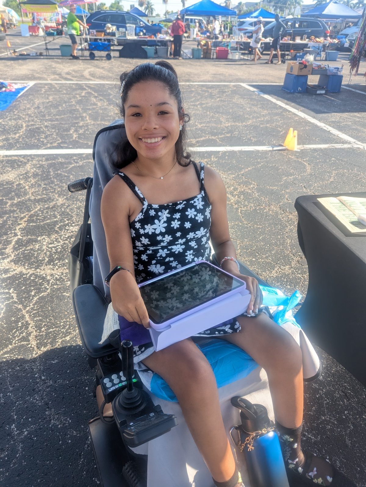

Our Story
From banana bread to barrels.
In 2023, our two families were introduced to CUP, a local Tampa Bay coffee business that employs people with special needs. It made us realize we needed to help create jobs, too — so we started with banana bread, then pivoted to packing a luxury coffee, perfect for gifts and special occasions, with special needs individuals doing the packing.
Every bag is sourced from Hog Batch, a specialty roaster in St. Petersburg, FL, then aged in bourbon, rum, or whiskey barrels for a flavor you won't find on a grocery shelf.
In April 2026, we rebranded to Shared Grounds and Sons. Shared, because we're building this with and for the special needs community. Grounds, for the coffee — and because we're building it from the ground up. And Sons, because we started all of this for our own two sons, both born with Down syndrome.